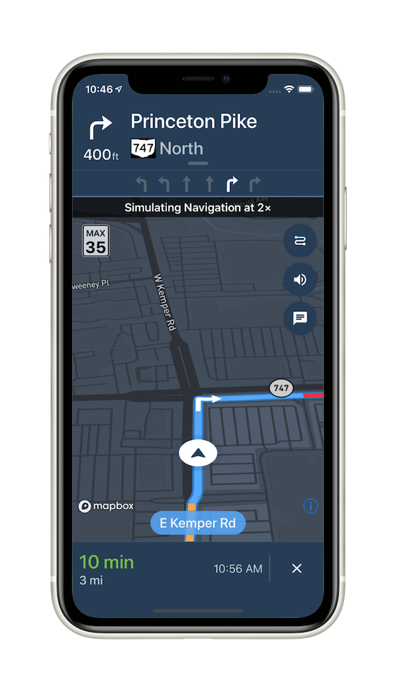

Install in Dash
Install in Dash
 Mapbox Navigation SDK for iOS Reference
Mapbox Navigation SDK for iOS Reference
Mapbox Navigation SDK for iOS

The Mapbox Navigation SDK gives you all the tools you need to add turn-by-turn navigation to your application. It takes just a few minutes to drop a full-fledged turn-by-turn navigation view controller into your application. Or use the Core Navigation framework directly to build something truly custom.
The Mapbox Navigation SDK and Core Navigation are compatible with applications written in Swift 5 in Xcode 10.2. The Mapbox Navigation and Mapbox Core Navigation frameworks run on iOS 10.0 and above.
Installation
Using Swift Package Manager
To install the MapboxNavigation framework in an application using Swift Package Manager:
Go to your Mapbox account dashboard and create an access token that has the
DOWNLOADS:READscope. PLEASE NOTE: This is not the same as your production Mapbox API token. Make sure to keep it private and do not insert it into any Info.plist file. Create a file named.netrcin your home directory if it doesn’t already exist, then add the following lines to the end of the file:machine api.mapbox.com login mapbox password PRIVATE_MAPBOX_API_TOKENwhere PRIVATE_MAPBOX_API_TOKEN is your Mapbox API token with the
DOWNLOADS:READscope.In Xcode, go to File ‣ Swift Packages ‣ Add Package Dependency.
Enter
https://github.com/mapbox/mapbox-navigation-ios.gitas the package repository and click Next.Set Rules to Version, Up to Next Major, and enter
2.0.0-rc.5as the minimum version requirement. Click Next.
To install the MapboxCoreNavigation framework in another package rather than an application, run swift package init to create a Package.swift, then add the following dependency:
// Latest prerelease
.package(name: "MapboxNavigation", url: "https://github.com/mapbox/mapbox-navigation-ios.git", from: "2.0.0-rc.5")
Using CocoaPods
To install the MapboxNavigation framework using CocoaPods:
Go to your Mapbox account dashboard and create an access token that has the
DOWNLOADS:READscope. PLEASE NOTE: This is not the same as your production Mapbox API token. Make sure to keep it private and do not insert it into any Info.plist file. Create a file named.netrcin your home directory if it doesn’t already exist, then add the following lines to the end of the file:machine api.mapbox.com login mapbox password PRIVATE_MAPBOX_API_TOKENwhere PRIVATE_MAPBOX_API_TOKEN is your Mapbox API token with the
DOWNLOADS:READscope.Create a Podfile with the following specification:
# Latest stable release pod 'MapboxNavigation', '~> 2.0' # Latest prerelease pod 'MapboxCoreNavigation', :git => 'https://github.com/mapbox/mapbox-navigation-ios.git', :tag => 'v2.0.0-rc.5' pod 'MapboxNavigation', :git => 'https://github.com/mapbox/mapbox-navigation-ios.git', :tag => 'v2.0.0-rc.5'Run
pod repo update && pod installand open the resulting Xcode workspace.
Configuration
Mapbox APIs and vector tiles require a Mapbox account and API access token. In the project editor, select the application target, then go to the Info tab. Under the “Custom iOS Target Properties” section, set
MBXAccessTokento your access token. You can obtain an access token from the Mapbox account page. Usage of Mapbox APIs is billed together based on monthly active users (MAU) rather than individually by HTTP request.In order for the SDK to track the user’s location as they move along the route, set
NSLocationWhenInUseUsageDescriptionto:Shows your location on the map and helps improve the map.
Users expect the SDK to continue to track the user’s location and deliver audible instructions even while a different application is visible or the device is locked. Go to the Signing & Capabilities tab. Under the Background Modes section, enable “Audio, AirPlay, and Picture in Picture” and “Location updates”. (Alternatively, add the
audioandlocationvalues to theUIBackgroundModesarray in the Info tab.)
Now import the relevant modules and present a new NavigationViewController. You can also push to a navigation view controller from within a storyboard if your application’s UI is laid out in Interface Builder.
import MapboxDirections
import MapboxCoreNavigation
import MapboxNavigation
// Define two waypoints to travel between
let origin = Waypoint(coordinate: CLLocationCoordinate2D(latitude: 38.9131752, longitude: -77.0324047), name: "Mapbox")
let destination = Waypoint(coordinate: CLLocationCoordinate2D(latitude: 38.8977, longitude: -77.0365), name: "White House")
// Set options
let routeOptions = NavigationRouteOptions(waypoints: [origin, destination])
// Request a route using MapboxDirections
Directions.shared.calculate(routeOptions) { [weak self] (session, result) in
switch result {
case .failure(let error):
print(error.localizedDescription)
case .success(let response):
guard let strongSelf = self else {
return
}
// Pass the generated route response to the the NavigationViewController
let viewController = NavigationViewController(for: response, routeIndex: 0, routeOptions: routeOptions)
viewController.modalPresentationStyle = .fullScreen
strongSelf.present(viewController, animated: true, completion: nil)
}
}
Starting points
This SDK is divided into two frameworks: the Mapbox Navigation framework (MapboxNavigation) is the ready-made turn-by-turn navigation UI, while the Mapbox Core Navigation framework (MapboxCoreNavigation) is responsible for the underlying navigation logic.
Mapbox Navigation
NavigationViewController is the main class that encapsulates the entirety of the turn-by-turn navigation UI, orchestrating the map view, various UI elements, and the route controller. Your application would most likely present an instance of this class. The NavigationViewControllerDelegate protocol allows your application to customize various aspects of the UI and react to location-related events as they occur.
NavigationMapView is the map view at the center of the turn-by-turn navigation UI. You can also use this class independently of NavigationViewController, for example to display a route preview map. The NavigationMapViewDelegate protocol allows your application to customize various aspects of the map view’s appearance. PassiveLocationProvider is an optional alternative to CLLocationManager for use with any standalone MapView or NavigationMapView.
CarPlayManager is the class that manages the CarPlay screen if your application is CarPlay-enabled. It provides a main map for browsing, a search interface that can be powered by the Mapbox Search SDK for iOS or MapboxGeocoder.swift, and a turn-by-turn navigation UI similar to the one provided by NavigationViewController. Your UIApplicationDelegate subclass can conform to the CarPlayManagerDelegate protocol to manage handoffs between NavigationViewController and the CarPlay device, as well as to customize some aspects of the CarPlay navigation experience. To take advantage of CarPlay functionality, your application must have a CarPlay navigation application entitlement and be built in Xcode 10 or above, and the user’s iPhone or iPad must have iOS 12 or above installed.
Core Navigation
MapboxNavigationService is responsible for receiving user location updates and determining their relation to the route line. If you build a completely custom navigation UI, this is the class your code would interact with directly. The NavigationServiceDelegate protocol allows your application to react to location-related events as they occur. Corresponding Notifications from the NavigationService‘s RouteController are also posted to the shared NotificationCenter. These notifications indicate the current state of the application in the form of a RouteProgress object.
For further details, consult the guides and examples included with this API reference. If you have any questions, please see our help page. We welcome your bug reports, feature requests, and contributions.
Changes in version 2.0.0
Packaging
- Choose from two new pricing options depending on your use case: per-trip or unlimited trips. (#3147, #3338)
- The Mapbox Navigation SDK for iOS license has changed from the ISC License to the Mapbox Terms of Service. (#2808)
- To gain access to Mapbox server APIs, set
MBXAccessTokenin your Info.plist.MGLMapboxAccessTokenis deprecated and no longer supported byNavigationMapView. (#2837) - The
MBXNavigationBillingMethodInfo.plist key is no longer supported. (#3147)
System requirements
- MapboxNavigation and MapboxCoreNavigation require iOS 11.0 or above to run. iOS 10.x is no longer supported. (#2808)
- Xcode 12.4 or above is now required for building this SDK from source.
- You can build MapboxNavigation for an iOS simulator on an Apple Silicon–powered Mac. (#3031)
- You can now install MapboxNavigation using Swift Package Manager, but you can no longer install it using Carthage. If you previously installed MapboxNavigation using Carthage, use Swift Package Manager instead. (#2808)
- Carthage v0.38 or above is now required for installing this SDK if you use Carthage. (#3031)
- Added a Castilian Spanish localization. (#3186)
Dependencies
- MapboxNavigation now depends on MapboxMaps v10.0.0-rc.9 instead of Mapbox Maps SDK for iOS v6.x. Consult the “Migrate to v10” guide for tips on upgrading your runtime styling and other map-related code. (#3391)
- MapboxCoreNavigation no longer depends on MapboxAccounts. If you previously installed MapboxCoreNavigation using Carthage, remove MapboxAccounts.framework from your application’s Link Binary With Libraries build phase. (#2829)
- MapboxCoreNavigation now depends on MapboxMobileEvents v1.x. The dependency on MapboxMobileEvents is subject to change or removal in a future minor release of MapboxCoreNavigation, so your Podfile, Cartfile, or Package.swift should not explicitly depend on MapboxMobileEvents. (#3320)
- MapboxCoreNavigation now depends on MapboxDirections v2.0.0-rc.3. (#3419)
- MapboxCoreNavigation now depends on Turf v2.0.0-rc.1. (#3248)
- MapboxCoreNavigation now depends on MapboxNavigationNative v68.x. (#3419)
- MapboxCoreNavigation now depends on MapboxCommon v19.x. (#3391)
- Removed the optional dependency on MapboxGeocoder.swift. (#2999, #3183)
Map
NavigationMapViewis no longer a subclass ofMGLMapView. To accessMGLMapViewproperties and methods, use theNavigationMapView.mapViewproperty. (#2808)- Added the
NavigationOptions.navigationMapViewproperty for reusing a custom map view withinNavigationViewController. (#3186). - Added the
NavigationMapView(frame:navigationCameraType:tileStoreLocation:)initializer. (#2826) - Replaced the
NavigationMapView.navigationMapDelegateandNavigationMapView.navigationMapViewDelegateproperties with a singleNavigationMapView.delegateproperty. (#2808) - Renamed the
NavigationViewController.mapViewproperty toNavigationViewController.navigationMapView. (#2808) - Renamed the
MGLStyle.navigationDayStyleURLandMGLStyle.navigationNightStyleURLproperties toStyleURI.navigationDayandStyleURI.navigationNight, respectively. Removed theMGLStyle.navigationDayStyleURL(version:)andMGLStyle.navigationNightStyleURL(version:)methods in favor of these renamed properties. (#3332) - Renamed the
NavigationMapView.highlightBuildings(at:in3D:)method toNavigationMapView.highlightBuildings(at:in3D:completion:). (#2827)
Camera
- Added the
NavigationMapView.navigationCameraandNavigationCamera.cameraStateTransitionproperties for controlling the camera’s motion and theNavigationViewportDataSourceclass for configuring the viewport behavior based on the current location and nearby portions of the route line. Added theViewportDataSourceandCameraStateTransitionprotocols and theNavigationViewportDataSourceOptionsstruct for more granular customization. (#2826, #2944) - Removed the
CarPlayNavigationViewController.tracksUserCourseproperty and theNavigationMapView.enableFrameByFrameCourseViewTracking(for:),NavigationMapView.updateCourseTracking(location:camera:animated:),NavigationMapView.setOverheadCameraView(from:along:for:), andNavigationMapView.recenterMap()methods in favor of theNavigationMapView.navigationCameraproperty. (#2826) - Removed the
NavigationMapView.defaultAltitude,NavigationMapView.zoomedOutMotorwayAltitude,NavigationMapView.longManeuverDistance,NavigationMapView.defaultPadding,NavigationMapView.courseTrackingDelegate, andNavigationViewController.pendingCameraproperties and theNavigationMapViewDelegate.navigationMapViewUserAnchorPoint(_:)method in favor of theNavigationCamera.cameraStateTransitionproperty. (#2826) NavigationMapView.updateCourseTracking(location:camera:animated:)accepts aCameraOptionsinstance instead of anMGLMapCameraobject. (#2808)- Changed the
NavigationViewController.pendingCameraproperty’s type fromMGLMapCameratoCameraOptions. (#2808) - Renamed the
CourseUpdatable.update(location:pitch:direction:animated:tracksUserCourse:)method toCourseUpdatable.update(location:pitch:direction:animated:navigationCameraState:). (#2826) - Eliminated redundant camera animations to conserve power. (#3155, #3172)
User location indicator
- Removed the
NavigationMapView.showsUserLocationandNavigationMapView.tracksUserCourseproperties in favor ofNavigationMapView.userLocationStyle. (#2808) - Added the
NavigationMapView.userLocationStyleproperty to customize how the user’s current location is displayed on the map. Set this property toUserLocationStyle.puck2D(configuration:)orUserLocationStyle.puck3D(configuration:)to use a location indicator layer (LayerType.locationIndicator) powered by the Mapbox Maps SDK instead of the default view-backed implementation. (#2968) - Removed the
NavigationMapView.userCourseViewproperty in favor of the associated value whenNavigationMapView.userLocationStyleis set toUserLocationStyle.courseView(_:). (#2968) - If you need to customize the appearance of the user location indicator, you can subclass
UserPuckCourseViewandUserHaloCourseViewas a starting point. (#2968) - Added the
UserHaloCourseView.haloBorderWidthproperty for changing the width of the ring around the halo view. (#3309) - Fixed an issue where setting
UserPuckCourseView.puckColorin aStylesubclass had no effect. (#3306) - Fixed a memory leak in
UserCourseView. (#3120) - Fixed the pitch issue of
UserHaloCourseViewwhen map tilted during active guidance navigation. (#3407)
Route overlay
- Removed the
NavigationAnnotationclass. (#2808) - Renamed the
MBRouteLineWidthByZoomLevelproperty toConstants.RouteLineWidthByZoomLeveland changed its type toDoublefor keys and values. (#2808) - Renamed the
MBCurrentLegAttributeandMBCongestionAttributeconstants toConstants.CurrentLegAttributeandConstants.CongestionAttribute, respectively. (#2808) - Added the
NavigationMapView.navigationMapView(_:didAdd:pointAnnotationManager:)andNavigationViewController.navigationViewController(_:didAdd:pointAnnotationManager:)delegate methods, which are called whenever aPointAnnotationis added to aNavigationMapVieworNavigationViewController, respectively, to represent the final destination. Added theNavigationMapView.pointAnnotationManagerproperty for managing point annotations. (#2961, #3109) - When specifying the
legIndexinNavigationMapView.show(_:legIndex:), the route line for the specific route leg shows color-coded congestion segments, while other route legs are stroked withNavigationMapView.routeCasingColorby default. If the leg index is unspecified, all the route legs show color-coded congestion. During turn-by-turn navigation, the default specified route leg is the current route leg. You can override the route leg colors using properties such asNavigationMapView.routeCasingColorandNavigationMapView.trafficHeavyColor. Added theNavigationMapView.showsCongestionForAlternativeRoutesproperty to show congestion levels with different colors on alternative route lines. (#2833, #2887) - Fixed an issue where the route line disappears when changing a
NavigationMapView’s style. (#3136) - Renamed the
NavigationMapView.updateRoute(_:)method toNavigationMapView.travelAlongRouteLine(to:). Improved the performance of updating the route line to change color at the user’s location as they progress along the route. (#3201). - Fixed an issue where the route line grows backwards when the
NavigationViewController.routeLineTracksTraversalproperty is set totrueand the user passes the destination. (#3255) - Fixed incorrect color-coded traffic congestion along the route line and incorrect speeds in the speed limit view after some time had elapsed after rerouting. (#3344)
- By default, there is no longer a subtle crossfade between traffic congestion segments along a route line. To reenable this crossfade, set the
NavigationMapView.crossfadesCongestionSegmentsproperty totrue. You can also adjust the length of this crossfade using the global variableGradientCongestionFadingDistance. (#3153, #3307) - The duration annotations added by the
NavigationMapView.showRouteDurations(along:)method are now set in the fonts you specify using theNavigationMapView.routeDurationAnnotationFontNamesproperty. Use this property to specify a list of fallback fonts for better language support. (#2873) - Fixed an issue when route line was sometimes invisible after starting turn-by-turn navigation. (#3205)
Banners and guidance instructions
- Removed the
InstructionsBannerViewDelegate.didDragInstructionsBanner(_:)method. (#2808) - Removed the
StatusView.delegateandStatusView.canChangeValueproperties and theStatusViewDelegateandDeprecatedStatusViewDelegateprotocols. (#2993) - Removed the
BottomBannerViewController(delegate:)initializer. (#2993) - The top banner can now show a wider variety of turn lane configurations, such as combination U-turn/left turn lanes and combination through/slight right turn lanes. (#2882)
- Fixed an issue where the current road name label flashed when the camera state changed or the user traveled onto an unnamed road. (#2958)
- Fixed an issue where the current road name label sometimes displayed the name of an intersecting road instead of the current road or blinked in and out. (#3257)
- Fixed an issue where lane guidance icons would sometimes highlight the wrong arrow. (#2942)
- Fixed an issue where instruction banners could appear in the wrong color after switching between
Styles. (#2977) - Fixed an issue where
GenericRouteShieldimages would ignore changing its foreground color in favor of a cached image. (#3217) - Fixed an issue where some banner instructions were occasionally skipped. (#3265)
- Improved the current road name label’s performance and fixed a potential crash when updating it. (#3340)
- Fixed an issue where arrival guidance card appears too early. (#3383)
- Fixed an issue where the noncurrent guidance cards were highlighted. (#3442)
Location tracking
- Added the
NavigationLocationProviderclass to conform toLocationProviderprotocol, which depends onNavigationLocationManagerto detect the user’s location as it changes during turn-by-turn navigation.SimulatedLocationManagerandReplayLocationManagercan now be used with a standaloneNavigationMapViewthroughNavigationMapView.mapView.location.overrideLocationProvider(with:). (#3091) - Added the
Notification.Name.currentRoadNameDidChangeto detect the road name posted byRouteController. (#3266) - Added the
RouteController.startRecordingHistory(),RouteController.stopRecordingHistory(completionHandler:),PassiveLocationManager.startRecordingHistory(), andPassiveLocationManager.stopRecordingHistory(completionHandler:)methods for recording details about a trip for debugging purposes. (#3157) - Renamed the
RouterDataSource.locationProviderandEventsManagerDataSource.locationProviderproperties toRouterDataSource.locationManagerTypeandActiveNavigationEventsManagerDataSource.locationManagerType, respectively. (#3199) - Renamed the
Router.advanceLegIndex()method toRouter.advanceLegIndex(completionHandler:)and thePassiveLocationDataSource.updateLocation(_:)method toPassiveLocationManager.updateLocation(_:completionHandler:). These methods are now asynchronous, and their completion handlers indicate whether the operation succeeded. (#3342) - Removed the
RouteLegProgress.upComingStepproperty. (#2993) - Removed the
NavigationViewController.indexedRoute,NavigationService.indexedRoute, andRouter.indexedRouteproperties in favor ofNavigationViewController.indexedRouteResponse,NavigationService.indexedRouteResponse, andRouter.indexedRouteResponse, respectively. Removed theRouteProgress.indexedRouteproperty. (#3182) - The
NavigationViewController.indexedRoute,NavigationService.indexedRoute,Router.indexedRoute, andRouteController.routeProgressproperties are no longer writable. Use theRouter.updateRoute(with:routeOptions:)method to manually reroute the user. (#3159, #3345) - The
NavigationService.routerandMapboxNavigationService.routerproperties are no longer unsafe-unowned. (#3055) - Fixed unnecessary rerouting when calling the
NavigationService.start()method. (#3239) - Fixed an issue where
RouteControllerorPassiveLocationManagersometimes snapped the user’s location assuming a path that violated a turn restriction. (#2808) - Added
SimulationMode.inTunnelsto enable simulating user location when loosing GPS signal while traversing tunnels. Simulation mode for default navigation service now can be configured usingNavigationOptons.simulationMode. (#3314) - Improved performance and decreased memory usage when downloading routing tiles. (#2808)
- Fixed a crash when navigating along a route 0 meters long (for example, because two waypoints snap to the same location). (#3387)
Passive navigation
- Renamed
PassiveLocationManagertoPassiveLocationProviderandPassiveLocationDataSourcetoPassiveLocationManagerfor consistency withNavigationLocationProviderandNavigationLocationManager. (#3091) PassiveLocationProvidernow conforms to theLocationProviderprotocol instead ofMGLLocationManager. (#2808)- The
PassiveLocationProvider.delegateproperty is now of typeLocationProviderDelegateinstead ofMGLLocationManagerDelegate. (#2808) - Replaced
PassiveLocationManager.accuracyAuthorization()was replaced with thePassiveLocationProvider.accuracyAuthorizationproperty, which now returnsCLAccuracyAuthorizationinstead ofMBNavigationAccuracyAuthorization. (#2808) - Fixed a potential hang when
PassiveLocationManagerfails to download routing tiles. (#2808) - Renamed
PassiveLocationManager.startUpdatingLocation(completionHandler:)toPassiveLocationProvider.startUpdatingLocation(). This method now runs synchronously likeCLLocationManager.startUpdatingLocation(). (#2823)
Rerouting
- Added the
NavigationViewControllerDelegate.navigationViewController(_:shouldPreventReroutesWhenArrivingAt:)method, which is called each time the user arrives at a waypoint. By default, this method returns true and prevents rerouting upon arriving. (#3195) - Renamed
RouteOptions.without(waypoint:)toRouteOptions.without(_:). (#3192) - Rerouting now uses a snapped location instead of a raw location from Core Location. (#3361)
- Fixed an issue where a subclass of
NavigationRouteOptionswould turn into an ordinaryRouteOptionswhen rerouting the user. (#3192) - Fixed an issue where the
RouteController.indexedRouteResponseproperty would remain unchanged after the user is rerouted. (#3344) - Fixed an issue where the
IndexedRouteResponse.routeIndexof theNavigationService.indexedRouteResponseproperty would reset to zero after the user is rerouted. (#3345) - Fixed an issue where the user would be rerouted even if
NavigationViewControllerDelegate.navigationViewController(_:shouldRerouteFrom:)returnedfalse. To implement reroute after arrival behavior, returntruefrom this method andfalsefromNavigationViewControllerDelegate.navigationViewController(_:shouldPreventReroutesWhenArrivingAt:), then setNavigationViewController.showsEndOfRouteFeedbacktofalse. (#3195)
Predictive caching and offline navigation
- A new predictive cache proactively fetches tiles which may become necessary if the device loses its Internet connection at some point during passive or active turn-by-turn navigation. Pass a
PredictiveCacheOptionsinstance into theNavigationOptions(styles:navigationService:voiceController:topBanner:bottomBanner:predictiveCacheOptions:)initializer as you configure aNavigationViewController, or manually callNavigationMapView.enablePredictiveCaching(options:). (#2830) - Added the
Directions.calculateOffline(options:completionHandler:)andDirections.calculateWithCache(options:completionHandler:)methods, which incorporate routing tiles from the predictive cache when possible to avoid relying on a network connection to calculate the route.RouteControllernow also uses the predictive cache when rerouting. (#2848) - Fixed an issue where
PassiveLocationManagerandRouteControllerdid not use the access token and host specified byPassiveLocationDataSource.directionsandRouteController.directions, respectively. Added thePredictiveCacheOptions.credentialsproperty for specifying the access token and host used for prefetching resources. (#2876) - Added the
NavigationMapView.mapTileStore,PassiveLocationManager.navigatorTileStoreandRouteController.navigatorTileStoreproperties for accessingTileStoreobjects that are responsible for downloading map and routing tiles. (#2955) - Added the
TilesetDescriptorFactoryclass for checking routing tiles in aTileStore. The tile storage location is determined by theNavigationSettings.tileStoreConfigurationproperty. (#3015, #3164, #3215) - Added the
Notification.Name.navigationDidSwitchToFallbackVersionandNotification.Name.navigationDidSwitchToTargetVersionnotifications, which are posted whenPassiveLocationManagerandRouteControllerfall back to an older set of navigation tiles present in the current tile storage. (#3014) - Added the
NavigationSettings.directionsandNavigationSettings.tileStoreConfigurationproperties for ensuring consistent caching between instances ofPassiveLocationManagerandRouteController. Thedirectionsargument ofPassiveLocationManager(directions:systemLocationManager:),RouteController(alongRouteAtIndex:in:options:directions:dataSource:), andMapboxNavigationService(routeResponse:routeIndex:routeOptions:directions:locationSource:eventsManagerType:simulating:routerType:)now defaults toNavigationSettings.directions. (#3215) - Removed
Bundle.ensureSuggestedTileURLExists(),Bundle.suggestedTileURLandBundle.suggestedTileURL(version:). (#3425)
Electronic horizon and route alerts
- While a
RouteController,PassiveLocationProvider, orPassiveLocationManageris tracking the user’s location, you can get notifications about location changes that indicate relevant details in the electronic horizon – the upcoming portion of the routing graph – such as the names of cross streets and upcoming speed limit changes. To receive this information, observe theNotification.Name.electronicHorizonDidUpdatePosition,Notification.Name.electronicHorizonDidEnterRoadObject,Notification.Name.electronicHorizonDidExitRoadObject, andNotification.Name.electronicHorizonDidPassRoadObjectnotifications. Use theRouteController.roadGraphorPassiveLocationManager.roadGraphproperty to get more information about the edges contained in these notifications. Optionally set theRouteController.electronicHorizonOptionsorPassiveLocationManager.electronicHorizonOptionsproperty to configure the extent of electronic horizon calculations. (#2834) - Added the
RouteController.roadObjectMatcherandPassiveLocationManager.roadObjectMatcherproperties for creating user-defined road objects by matching location primitives to the road graph. (#3004) - Removed the
Alertenumeration and theRouteAlert.alert,RouteAlert.distance,RouteAlert.length,RouteAlert.beginCoordinate,RouteAlert.endCoordinate,RouteAlert.beginSegmentIndex, andRouteAlert.endSegmentIndexproperties in favor of a consolidatedRouteAlerts.roadObjectproperty. (#2991)
CarPlay
- Removed the
CarPlayNavigationDelegate.carPlayNavigationViewControllerDidArrive(_:)method. (#2808) - Renamed the
CarPlayManager.mapViewproperty toCarPlayManager.navigationMapView. (#2808) - Removed the
CarPlayManager.overviewButtonproperty. (#2808) - Removed the
CarPlayNavigationViewController.drivingSideproperty. (#2808) - Added the
CarPlayManagerDelegate.carPlayManager(_:shouldPresentArrivalUIFor:)andCarPlayNavigationViewController.navigationService(_:didArriveAt:)methods for determining when to present an arrival user interface. (#3016) - Renamed the
CarPlayNavigationDelegateprotocol toCarPlayNavigationViewControllerDelegateand theCarPlayNavigationViewController.carPlayNavigationDelegateproperty toCarPlayNavigationViewController.delegate. (#3036) - The
CarPlayNavigationViewController.styleManagerandCarPlayMapViewController.styleManagerproperties are now read-only. (#3137) - Moved the
CarPlaySearchController.searchTemplate(_:updatedSearchText:completionHandler:),CarPlaySearchController.searchTemplate(_:searchTemplate:selectedResult:completionHandler:)methods to theCarPlaySearchControllerDelegateprotocol. Renamed theCarPlaySearchControllerDelegate.resultsOrNoResults(_:limit:)method toCarPlaySearchControllerDelegate.searchResults(with:limit:). (#2999) CarPlaySearchControllerDelegatenow conforms to theCPSearchTemplateDelegateprotocol. (#2999)- Added the
NavigationGeocodedPlacemarkstruct, which is similar to MapboxGeocoder.swift’sGeocodedPlacemarkstruct but with the addition of theNavigationGeocodedPlacemark.listItem()method. Added theRecentItemstruct to represent a recently selected search result. (#2999) - Added the
CarPlayMapViewControllerDelegateprotocol, which provides methods for reacting to events during the browsing and previewing activities. (#3190) - Added the
CarPlayMapViewControllerDelegate.carPlayMapViewController(_:didAdd:pointAnnotationManager:),CarPlayNavigationViewControllerDelegate.carPlayNavigationViewController(_:didAdd:pointAnnotationManager:)andCarPlayManager.carPlayManager(_:didAdd:to:pointAnnotationManager:)delegate methods, which will be called whenever thePointAnnotationrepresenting the final destination is added toCarPlayMapViewController,CarPlayNavigationViewControllerandCarPlayManager, respectively. (#3190) - A speed limit indicator now appears on the map during the browsing activity. (#3197)
- A speed limit indicator now can be fully hidden by using
SpeedLimitView.isAlwaysHiddenproperty. (#3429) - Renamed the
CarPlayManagerDelegate.carPlayManager(_:navigationServiceAlong:routeIndex:routeOptions:desiredSimulationMode:)method toCarPlayManagerDelegate.carPlayManager(_:navigationServiceFor:routeIndex:routeOptions:desiredSimulationMode:). It now returns an optionalNavigationService; if it isnil, aMapboxNavigationServicewill be used by default. (#3208) - Renamed the
CarPlayManagerDelegate.carplayManagerShouldDisableIdleTimer(_:)method toCarPlayManagerDelegate.carPlayManagerShouldDisableIdleTimer(_:). (#3208) - Added the
CarPlayManagerDelegate.carPlayManager(_:templateWillAppear:animated:),CarPlayManagerDelegate.carPlayManager(_:templateDidAppear:animated:),CarPlayManagerDelegate.carPlayManager(_:templateWillDisappear:animated:), andCarPlayManagerDelegate.carPlayManager(_:templateDidDisappear:animated:)methods to pass through the corresponding methods fromCPInterfaceControllerDelegate. (#3219) - Fixed an issue where
CPMapTemplate.tripEstimateStyleuses dark appearance even if light appearance is selected. (#3397) CarPlayMapViewControllerandCarPlayNavigationViewControllerare now subclassable. (#3424)- Added
CPInterfaceController.safePopTemplate(animated:), which allows to safely pop back aCPTemplateby a single level in the template navigation hierarchy. (#3426)
User feedback
- You can now solicit user feedback about
PassiveLocationManagerandNavigationMapViewoutside of active turn-by-turn navigation. UsePassiveLocationManager.eventsManagerproperty ofNavigationEventsManagertype to create and send user feedback. You can use aFeedbackViewControllerto present the user with the same options as during turn-by-turn navigation. Alternatively, if you present a custom feedback UI, call theNavigationEventsManager.createFeedback()method and configure the resultingFeedbackEventwith any additional context. (#3122, #3322) - The
ActiveNavigationEventsManagerDataSource.router,NavigationService.eventsManager, andMapboxNavigationService.eventsManagerproperties are no longer unsafe-unowned. (#3055) - Removed the
EventsManagertype alias. (#2993) - Feedback events now include a snapshot of
NavigationViewControllerthat is taken sooner, when the problem is more likely to be apparent. (#3049) - You can now manage the feedback event lifecycle, allowing the user to submit additional details later. Use
NavigationEventsManager.createFeedback()to create aFeedbackEventandNavigationEventsManager.sendActiveNavigationFeedback(_:type:description:)to send it to Mapbox.FeedbackEventconforms to theCodableprotocol, so your application can store incomplete feedback across sessions if necessary. (#3154, #3318) - To submit feedback during passive navigation, use
NavigationEventsManager.createFeedback()to create aFeedbackEventandNavigationEventsManager.sendPassiveNavigationFeedback(_:type:description:)to send it to Mapbox. This method acceptsPassiveNavigationFeedbackTypewith feedback types specific to the passive navigation. (#3154, #3318) - Added an optional
NavigationEventsManager.userInfoproperty that can be sent with all navigation events. The new property can contain application metadata, such as the application name and version, that is included in each event to help Mapbox triage and diagnose unexpected behavior. (#3007). - Fixed a missing feedback subtype description for
LooksIncorrectSubtype.incorrectSpeedLimitand all “other” subtypes. (#3238) - Renamed the
FeedbackViewController(eventsManager:)initializer toFeedbackViewController(eventsManager:type:). You can now customize the view controller to show only the feedback types specific to passive navigation. (#3323) - Renamed the
FeedbackTypeenumeration toActiveNavigationFeedbackTypeand theEventsManagerDataSourceprotocol toActiveNavigationEventsManagerDataSource. (#3327) - Renamed the user-facing feedback categories and subcategories for active turn-by-turn navigation that are represented at runtime by the
ActiveNavigationFeedbackTypeenumeration. (#3339 - Added the ability to pass your own screenshot to the
NavigationEventsManager.createFeedback()when a user submits a feedback. Screenshots help Mapbox to determine where issues exist for review and correction. (#3380 - Added
NavigationEventsManager.sessionId, which allows getting session identifier used in feedback and other events. (#3449)
Other changes
- If your storyboard has a segue to
NavigationViewControllerin Navigation.storyboard, you have to call theNavigationViewController.prepareViewLoading(routeResponse:routeIndex:routeOptions:navigationOptions:)method in your implementation of theUIViewController.prepare(for:sender:)method. (#2974, #3182) - Removed the
NavigationViewController.originproperty. (#2808) - Fixed a potential memory leak when using
MultiplexedSpeechSynthesizer. (#3005) - Fixed a thread-safety issue in
UnimplementedLoggingprotocol implementation. (#3024) - Fixed an issue where
UIApplication.shared.isIdleTimerDisabledwas not properly set in some cases. (#3245)